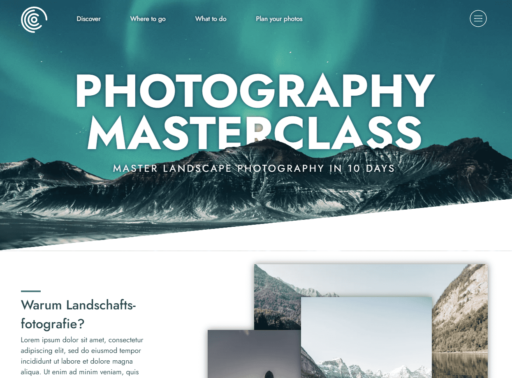

CSS Kurs: Moderne Techniken
umgesetzt mit
JavaScript, Sass
Was ich umsetzen konnte
Responsive Design
Ich habe gelernt, wie man Webseiten so gestaltet, dass sie nicht nur auf Desktop-Computern gut aussehen, sondern auch auf Mobilgeräten optimal dargestellt werden. Dabei habe ich sowohl den Ansatz des "Desktop-first" als auch "Mobile-first" Designs verstanden und angewendet.
Gradients
Ich kann jetzt schicke Farbverläufe sowohl als Hintergrundbilder als auch für Schriftfarben erstellen, um meinen Designs mehr visuelles Interesse zu verleihen.
Animationen
Mithilfe von CSS-Animationen, Transitions und @keyframes habe ich komplexe Animationen erstellt, die Hover-Effekte und flüssige Bewegungen beinhalten. Diese Animationen fügen meinen Webseiten eine dynamische und ansprechende Note hinzu.
3D-Effekte
Ich habe gelernt, wie man Elemente im 3D-Raum bewegt und so noch beeindruckendere Animationen und Effekte erzeugt.
Flexbox und CSS-Grid
Mit diesen fortschrittlichen Layout-Techniken kann ich Elemente nebeneinander platzieren oder ein automatisches Grid für ein flexibles und ansprechendes Design erstellen.
Positionierung von Elementen
Ich kann nun problemlos Elemente übereinander legen, um beispielsweise Bilder über Texte zu legen und so interessante visuelle Effekte zu erzielen.
SASS
Der Kurs hat mir beigebracht, wie ich meinen CSS-Code mit SASS strukturiere und organisiere. Ich kann Variablen und Mixins verwenden, um meinen Code besser wartbar und effizienter zu gestalten.
Interaktive Features ohne JavaScript
Ich habe gelernt, wie man interaktive Elemente wie ausfahrbare Seitenmenüs, aufklappbare Buttons und animierte Dialoge erstellt, ganz ohne JavaScript. Das hat meine Fähigkeiten als Webentwickler erweitert und mir gezeigt, wie man kreative Lösungen ohne zusätzliche Skripts implementiert.
BEM-Components
Mit diesem Ansatz zur Benennung von CSS-Klassen kann ich meinen Code besser organisieren und wiederverwendbaren CSS-Code schreiben, was meine Produktivität steigert.
Praxisprojekt von A-Z
Im Rahmen des Kurses habe ich ein komplettes Praxisprojekt entwickelt, das all diese Techniken in einem realen Kontext anwendet. Das Projekt umfasste interaktive Elemente, ansprechende Animationen und ein responsives Design, das auf verschiedenen Geräten optimal aussieht.
Fazit
Insgesamt habe ich durch diesen Kurs nicht nur mein Verständnis für moderne CSS-Techniken erweitert, sondern auch gelernt, wie ich diese Techniken effektiv in echten Webseitenprojekten einsetzen kann. Mein Portfolio als Webentwickler wurde durch die erworbenen Fähigkeiten und das umgesetzte Projekt erheblich aufgewertet.